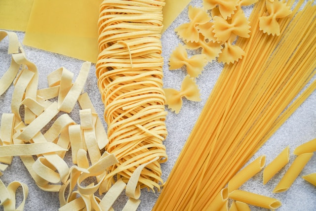

Home-made Pasta

Ingredients
- All-purpose flour, two cups
- 3 eggs
- Olive oil, 1/2 tbsp
- Salt, 1/2 tsp
Preparation
- Make a nest with the flour on a clean surface. Add the remaining ingredients to the center.
- Gently mix in the flour with your hands and work into a ball.
- Knead until smooth, about ten minutes.
- Wrap the dough in plastic wrap and let it rest at room temperature for 30 minutes.
- Slice a piece off the dough and flatten into a disk.
- Run the pasta through your preferred pasta cutter or cut into noodles.
- Cook the noodles in salted water for about a minute. Enjoy!
Go back home